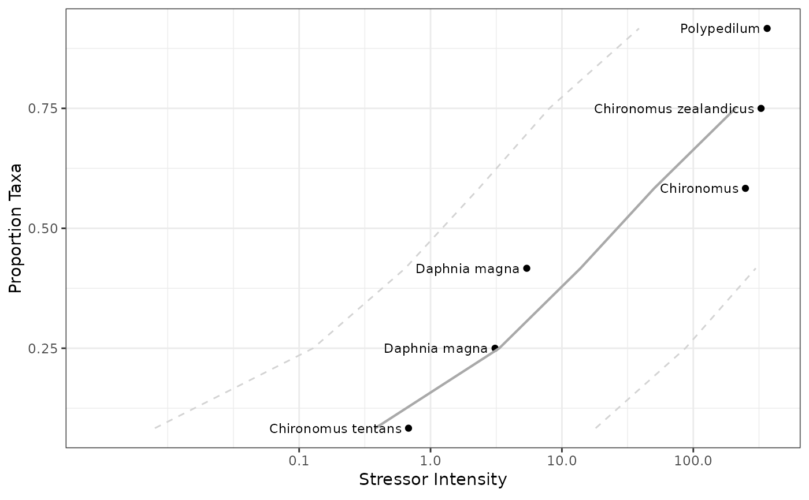
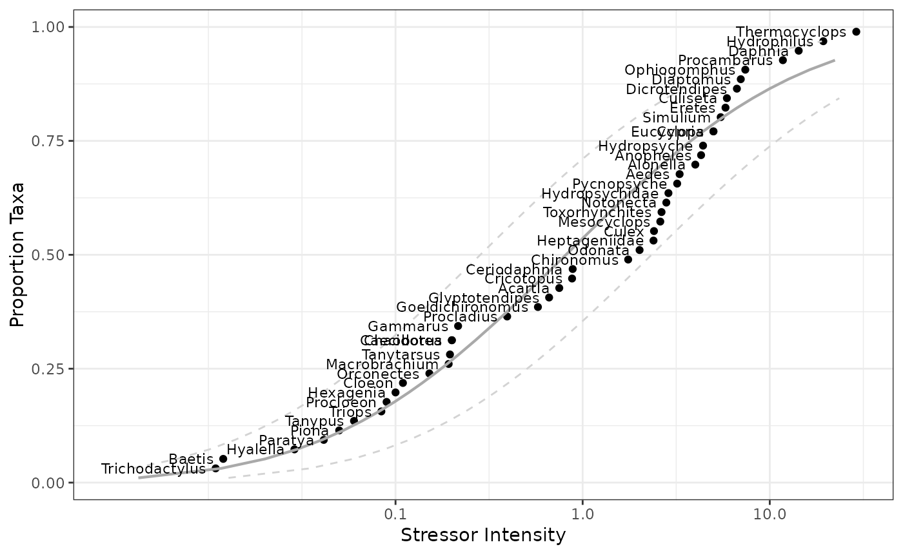
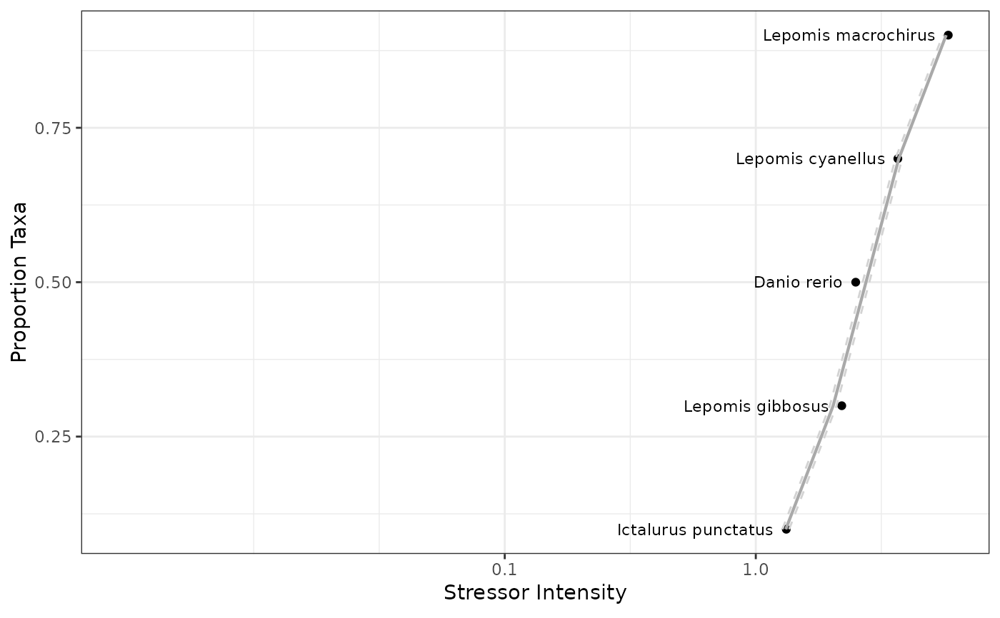
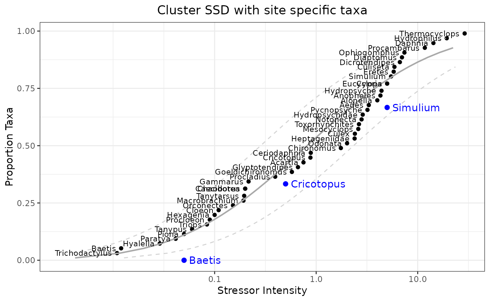

Generates plots of the proportion of species affected at different exposure levels in laboratory toxicity tests.
getSSDplot(Data, ResponseType, Taxa, Exposure)An SSD plot.
https://www.epa.gov/caddis-vol4/ssd-plots
# Example 1
# Define parameters
myDF <- data_SSD
myRT <- "ResponseType"
myTaxa <- "Taxa"
myExp <- "Exposure_mgperL"
# Run function
p1 <- getSSDplot(myDF, myRT, myTaxa, myExp)
print(p1)

# can save output to a file
if (FALSE) { # \dontrun{
library(ggplot2)
fn_p1 <- file.path(getwd(), "Results", "SSD_example1.pdf")
ggsave(fn_p1, p1)
} # }
#~~~~~~~~~~~~~~~~~~~~~~~~~~
# Example 2
myDF <- data_SSD_permethrin
myRT <- "ResponseType"
myTaxa <- "Taxa"
myExp <- "Exposure"
# Add missing column
myDF[,myRT] <- "LC50"
# Run function
p2 <- getSSDplot(myDF, myRT, myTaxa, myExp)
print(p2)

#' # can save output to a file
if (FALSE) { # \dontrun{
fn_p2 <- file.path(getwd(), "Results", "SSD_example2.pdf")
ggplot2::ggsave(fn_p2, p2)
} # }
#~~~~~~~~~~~~~~~~~~~~~~~~~~
# Example 3
# https://www.epa.gov/caddis-vol4/caddis-volume-4-data-analysis-download-software
# ssd_generator_v1.xlsm
myDF <- data_SSD_generator
myRT <- "ResponseType"
myTaxa <- "Taxa"
myExp <- "Exposure"
# Run function
p3 <- getSSDplot(myDF, myRT, myTaxa, myExp)
print(p3)

#
# can save output to a file
if (FALSE) { # \dontrun{
fn_p3 <- file.path(getwd(), "Results", "SSD_example3.pdf")
ggplot2::ggsave(fn_p3, p3)
} # }
#~~~~~~~~~~~~~~~~~~~~~~~~~~
# Example 2_mod
# (same plot as #2 above)
library(ggplot2)
# create points
analyte <- c(0.05, 0.5, 5)
abund <- c(0, 1/3, 2/3)
taxon <- c("Baetis", "Cricotopus", "Simulium")
df.site <- data.frame(analyte, abund, taxon)
# add points to plot and add title (centered)
p2 +
geom_point(data=df.site, aes(x=analyte, y=abund), colour="blue", size = 2) +
geom_text(data=df.site, aes(x=analyte, y=abund, label=taxon)
, hjust="left", nudge_x=0.05, colour="blue") +
labs(title="Cluster SSD with site specific taxa") + theme(plot.title=element_text(hjust=0.5))
